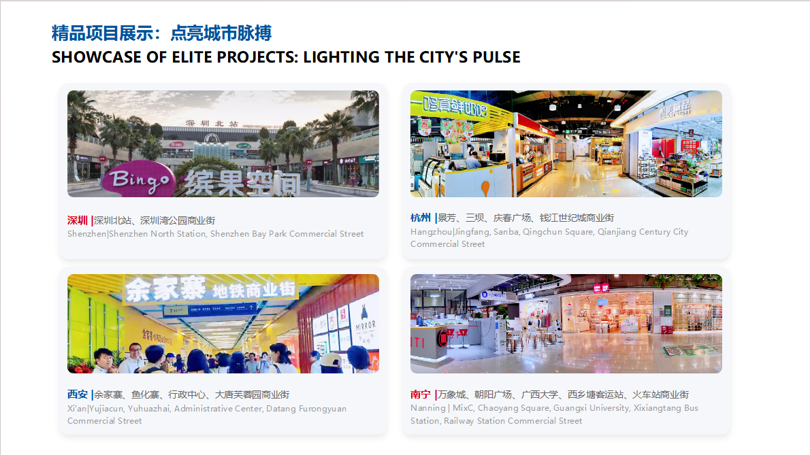
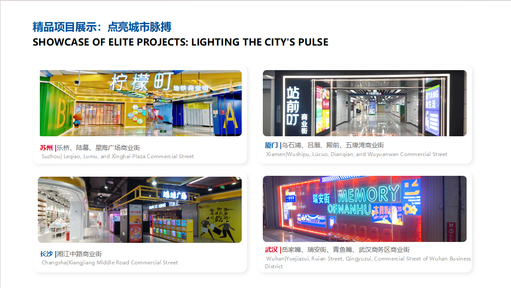
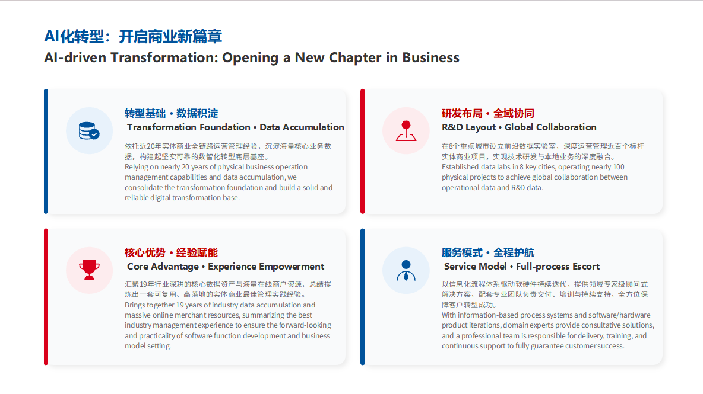
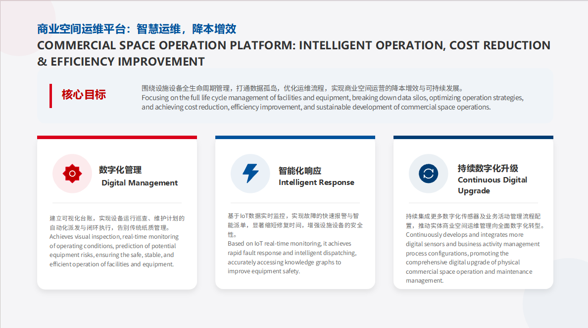
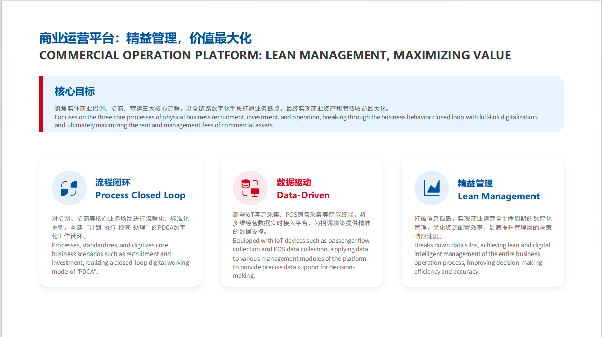
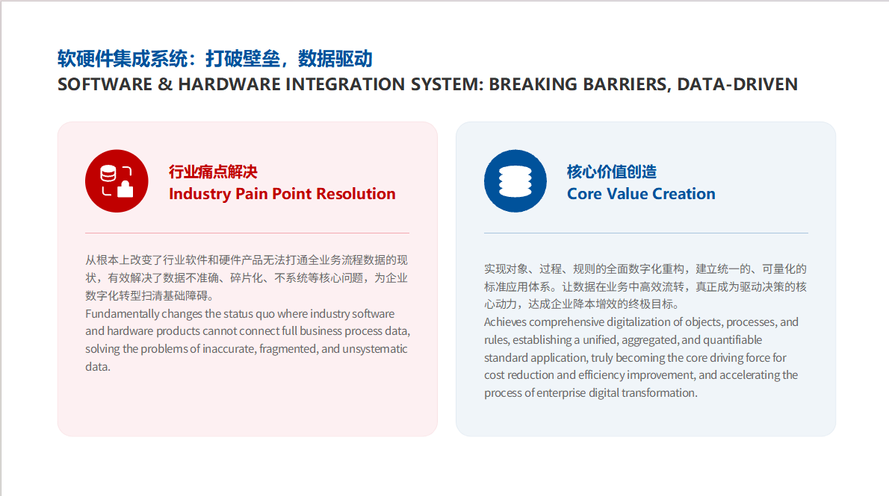

智慧运维，降本增效
围绕设施设备全生命周期管理，建立可视化台账、巡查维护计划和智能派单闭环。
PHYSICAL COMMERCE DIGITAL OPERATION
依托实体商业全链路运营经验，把商业空间、招商营运、设施设备、客流销售和软硬件系统打通，帮助实体商业实现精益管理、数据驱动和提质增效。
PLATFORM MATRIX
围绕设施设备全生命周期管理，建立可视化台账、巡查维护计划和智能派单闭环。
聚焦招调、招商、营运三大流程，构建计划-执行-检查-处理的 PDCA 数字化闭环。
打通业务流程与智能终端数据，解决数据不准确、碎片化、不系统的问题。
VALUE CREATION
设备、商户、合同、活动、客流和销售对象统一建模。
招商、巡检、维护、活动、复盘进入标准工作流。
租管费、预警、审批和运营标准通过系统沉淀。
用实时经营数据支持招商调整、资源配置和风险预警。
通过 PDCA 机制持续发现问题、执行优化、复盘迭代。
在报修、巡检、招商分析、经营报表等节点接入 AI 助理。





